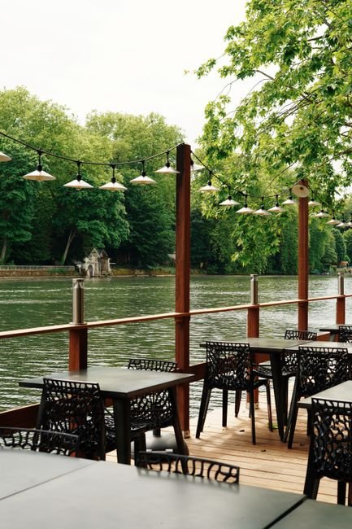
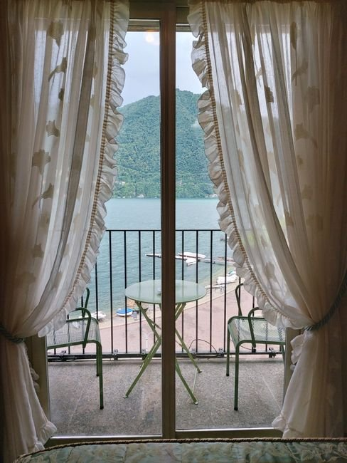

Sveža riba i autentični domaci specijaliteti na samoj obali Skadarskog jezera.

Lagani letnji povetarac i miris tradicije
Smešten u srcu Vranjine, Lesendro pruža jedinstven doživljaj domaće kuhinje tik uz jezero. Naša drvena terasa, bele zavese i sveže pripremljena riba pružaju spokoj i ukuse koje ćete dugo pamtiti.
Sveža riba iz lokalnih voda spremljena po tradicionalnoj recepturi.
Jedinstven pogled na jezero i osvežavajući povetarac tokom čitavog dana.
Lesendro je jedno od najboljih mesta koje smo posetili u Crnoj Gori za svežu ribu. Probali smo jegulju i pastrmku, i obe su bile izvanredne. Terasa tik uz jezero krasi neverovatan pogled koji iskustvo čini nezaboravnim. Svesrdno preporučujem!
Apsolutno izvanredno. Jedno od najboljih ribljih jela koja sam ikada jeo. Uzeli smo miks ribljih specijaliteta za dvoje. Ukus je bio vrhunski uz odličan odnos cene i kvaliteta. Obavezno uzmite hleb da umočite u sos od limuna i začinskog bilja!
Divno iskustvo! Usluga je bila predivna, a hrana sveža i ukusna. Uzeli smo lososa, povrće na žaru, hleb i sir. Porcija lososa je bila ogromna — izuzetno pošteno i ukusno!
Ako želite da doživite autentičnu domaću tradicionalnu kuhinju, samo dođite ovde, prepustite se domaćinima i uživajte! Posebno preporučujem krapa!
tankert, Vranjina 81305, Montenegro
Ponedeljak – Nedelja: 12:00 – 22:00
Vranjina 81305, Montenegro
Otvorite u Google Maps